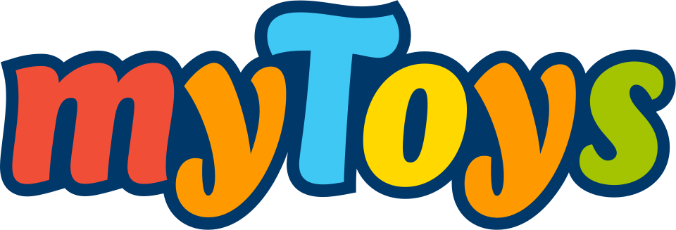

대표 로고대표 브랜드 마크
대표 로고대표 브랜드 마크홈 > 브랜드 매거진 > Kwantum
Kwantum
Kwantum는 네덜란드의 홈·라이프스타일 브랜드로, 공간 사용성, 소재감, 취향 편집, 일상 도구성이 함께 읽히는 영역입니다.
산업 분야 홈·라이프스타일 · 공개 등급 자료 기반 · 브랜드 평가 4.1 ★
한눈에 보는 브랜드
Kwantum는 네덜란드 기반의 홈·라이프스타일 브랜드입니다. 공간 사용성, 소재감, 취향 편집, 일상 도구성이 함께 읽히는 영역으로 분류되며, 브랜드명과 업종, 운영 국가, 공개 로고 여부를 함께 보며 사전 항목의 기본 맥락을 확인할 수 있습니다.
브랜드 관점
Kwantum 항목은 단순한 이름 목록이 아니라 홈·라이프스타일 시장 안에서 어떤 역할을 하는지 읽기 위한 기준점입니다. 제품·서비스 범위, 유통 방식, 시각 아이덴티티, 시장 포지션을 함께 비교하면 같은 산업의 다른 브랜드와 차이가 선명해집니다.
브랜드 아이덴티티
Kwantum의 아이덴티티는 브랜드명, 로고 사용 여부, 업종 언어, 국가적 배경을 중심으로 정리됩니다. 공개 로고 자산은 추후 권리 확인 후 보강할 수 있도록 텍스트 메타데이터 중심으로 관리합니다.
제품과 서비스
Kwantum의 제품과 서비스는 홈·라이프스타일 범주에서 해석됩니다. 이 섹션은 상품군, 서비스 방식, 판매 채널, 사용 장면을 분리해 추적하기 위한 기본 설명이며, 추가 자료가 확보되면 대표 제품과 가격대, 시장별 차이까지 확장할 수 있습니다.
현재 상태
타임라인
정리된 연도형 이벤트가 없습니다.
BI/CI 변천사
대표 로고대표 브랜드 마크함께 읽을 브랜드
Cu
Cuisinella
홈·라이프스타일 · 자료 기반CuisinellaCuisinella는 프랑스의 홈·라이프스타일 브랜드로, 공간 사용성, 소재감, 취향 편집, 일상 도구성이 함께 읽히는 영역입니다.
Fu
Fun
홈·라이프스타일 · 자료 기반FunFun는 벨기에의 홈·라이프스타일 브랜드로, 공간 사용성, 소재감, 취향 편집, 일상 도구성이 함께 읽히는 영역입니다.
 홈·라이프스타일 · 자료 기반Globus
홈·라이프스타일 · 자료 기반GlobusGlobus는 독일의 홈·라이프스타일 브랜드로, 공간 사용성, 소재감, 취향 편집, 일상 도구성이 함께 읽히는 영역입니다.
 홈·라이프스타일 · 자료 기반Jumbo
홈·라이프스타일 · 자료 기반JumboJumbo는 그리스의 홈·라이프스타일 브랜드로, 공간 사용성, 소재감, 취향 편집, 일상 도구성이 함께 읽히는 영역입니다.

홈·라이프스타일 · 자료 기반myToys.demyToys.de는 독일의 홈·라이프스타일 브랜드로, 공간 사용성, 소재감, 취향 편집, 일상 도구성이 함께 읽히는 영역입니다.
Sm
Smyk
홈·라이프스타일 · 자료 기반SmykSmyk는 폴란드의 홈·라이프스타일 브랜드로, 공간 사용성, 소재감, 취향 편집, 일상 도구성이 함께 읽히는 영역입니다.
OL
OLO Homes
홈·라이프스타일 · 편집 검수OLO HomesOLO Homes는 2024년에 기록된 Property 계열의 브랜드 아이덴티티 사례입니다. Bond가 아이덴티티 작업의 디자이너로 기록되어 있습니다. 공개 섹션 정...
Zu
Zudo
홈·라이프스타일 · 편집 검수ZudoZudo는 2025년에 기록된 Placemaking 계열의 브랜드 아이덴티티 사례입니다. DNCO가 아이덴티티 작업의 디자이너로 기록되어 있습니다. 공개 섹션 정보는...